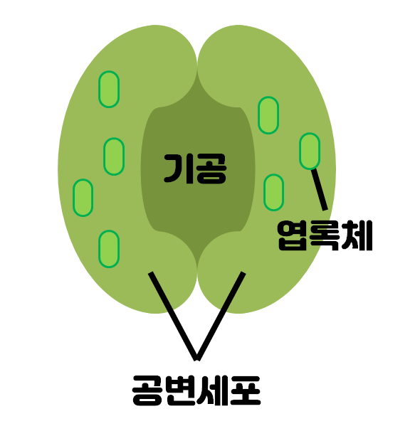

광합성에 필요한 것
광합성의 필요한 요인
일어나는 장소 - 엽록체 : 빛 에너지를 흡수하는 색소인 엽록소가 들어 있다.
일어나는 시간 - 낮 : 빛이 있을 때 일어난다.
필요한 물질 - 물과 이산화탄소
생성되는 물질 - 포도당과 산소 : 포도당의 경우 녹말로 변환되어 저장됩니다.
광합성에 잘 되기 위한 조건
온도 - 높아질수록 광합성이 점점 잘되지만, 일정 수치 이상 올라가면 급격히 능률이 떨어진다.
이산화탄소의 농도 - 높아질수록 광합성이 잘 되다가 일정한 수치 이상 올라가면 일정해진다.
빛의 세기 - 높아질수록 광합성이 잘 되다가 일정한 수치 이상 올라가면 일정해진다.
광합성이 일어나는 곳
기공
잎의 뒷면과 어린줄기의 표피에 있는 입술 모양으로 생긴 구멍이다. 기공은 공변세포에 의해 생성된 구멍인데, 물(수증기)과 산소, 이산화탄소가 출입하는 통로이다.
